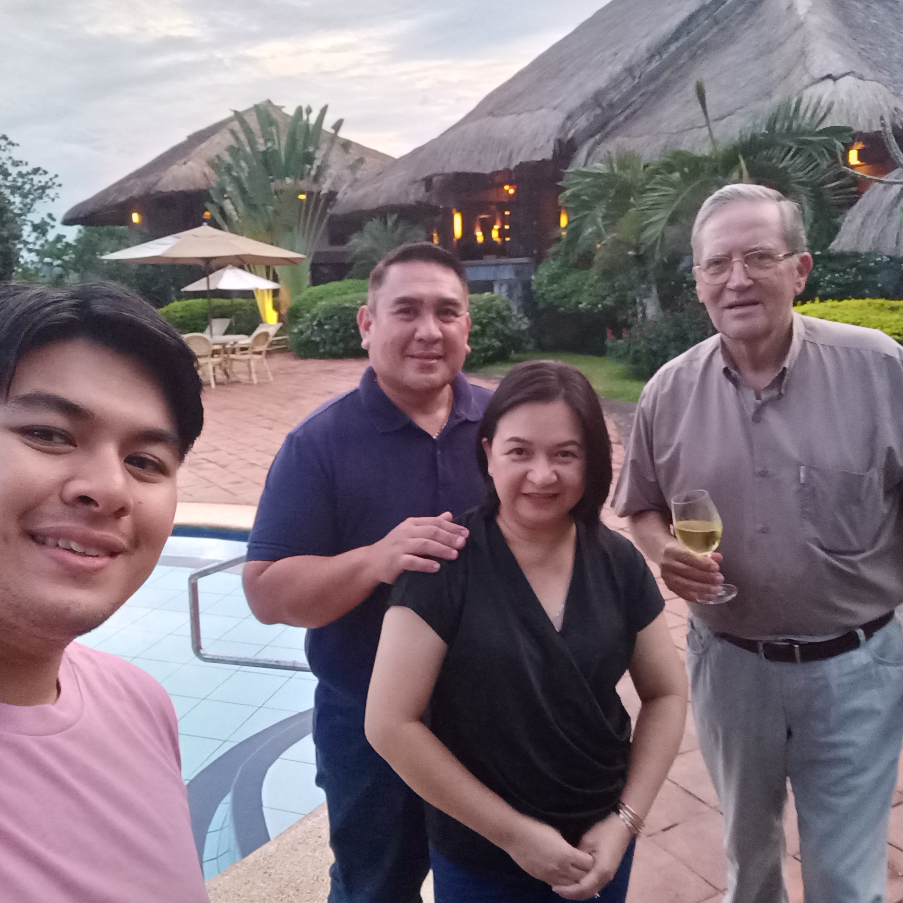
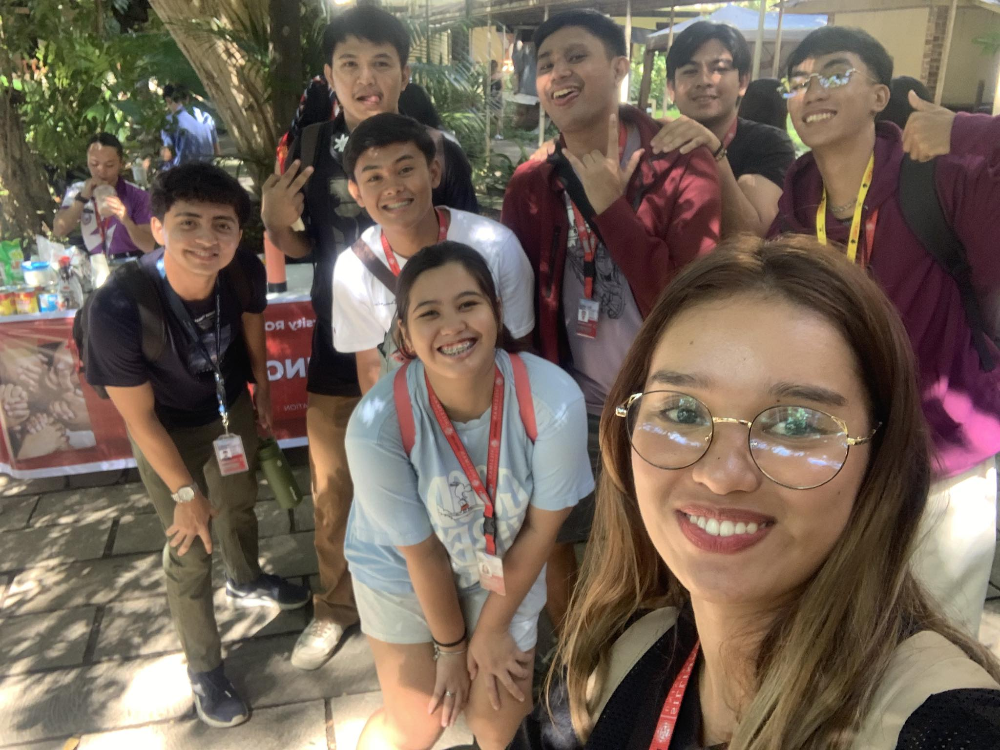
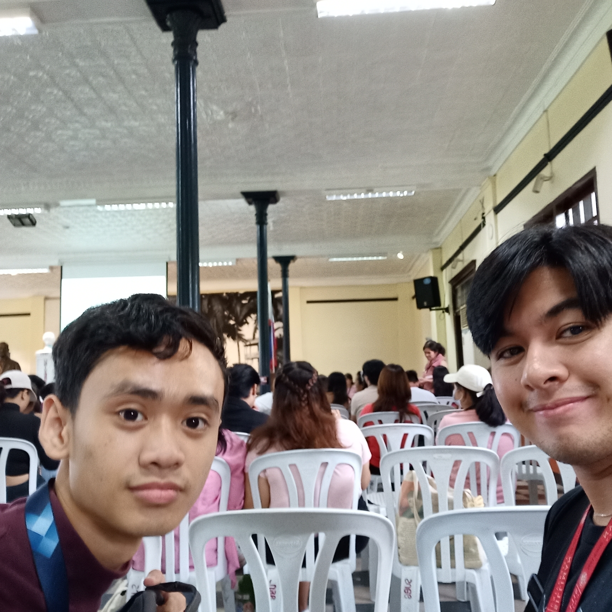
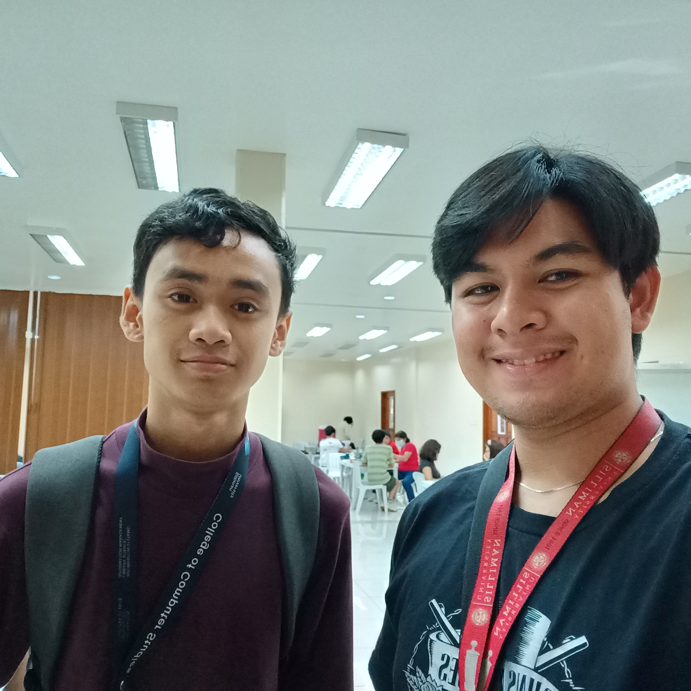
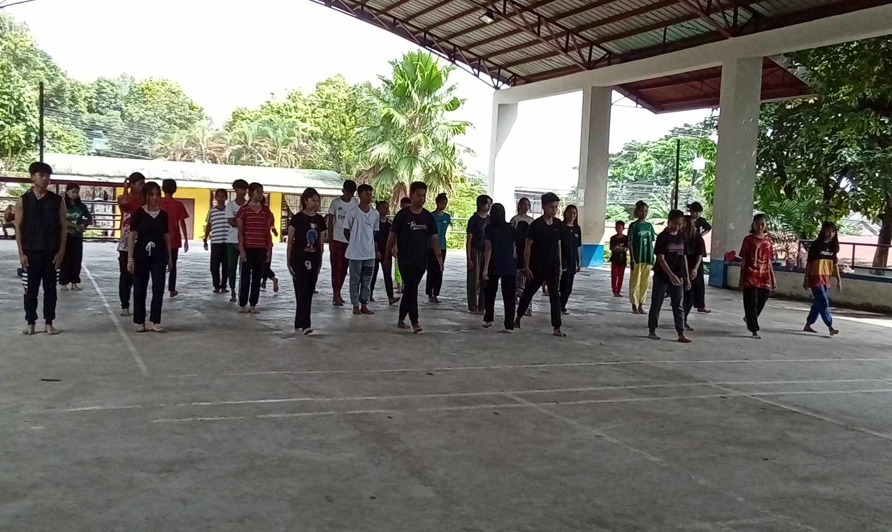
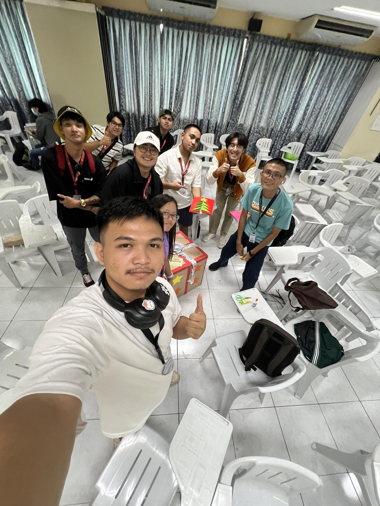

Dinner for a cause
Aug.30,2023
Organizer: My Extended Family
Points: 1
The Dinner for a Cause was a heartwarming evening where folks came together over good food and great
company to support something bigger than ourselves. There was this warmth in the air as everyone shared stories, laughed,
and
connected while knowing that each bite was contributing to making a positive difference. The venue at my uncles house was very
fitting for a beautiful dinner. It felt like being part of a community that cared, and that made the night truly special.
I was just a participant.
The Dinner for a Cause wasn't just an event; it was a gathering that embodied the true spirit of unity and compassion. Amidst the
clinking of cutlery and the savory aromas wafting through the air, there was an unspoken understanding that transcended mere
words. It was a coming together of individuals, each with their own unique stories and backgrounds, yet all sharing a common
purpose—to make a positive impact. Beyond the surface level of enjoying a meal, it was a shared belief in the power of collective
action. That night, it wasn't just about the sumptuous dishes or the elegant setup; it was about the collective heartbeat pulsating
in sync with the cause, creating an atmosphere brimming with hope and solidarity.
In that moment, surrounded by warmth and camaraderie, it felt like the boundaries between strangers dissolved effortlessly, weaving
threads of connection and empathy. It was a testament to the strength of community and the realization that even seemingly small
gestures, like breaking bread together, could be catalysts for significant change. Each person present, whether through their presence,
contributions, or simply their genuine engagement, became an integral part of a larger narrative—a narrative of kindness, generosity,
and a shared vision for a better world. This shared sense of purpose made the night not just memorable but transformative, reaffirming
the profound impact that collective goodwill can have on shaping a brighter future.
Because of the Dinner for a Cause, I am reminded of the incredible strength found in community and the profound impact of collective
action. This event has ignited within me a renewed sense of purpose, propelling me to seek more opportunities to contribute
meaningfully to causes that resonate with my values. It has shown me that even simple actions, like sharing a meal, can be a catalyst
for positive change. I am inspired to continue being part of something greater than myself, knowing that together, we can make a
tangible difference in the world.
Sponsors Donation Drive
Nov.23,2023
Organizer: ROTC Corp of Sponsors
Points: 1
The donation drive for prisoners was an eye-opening experience that showed the power of small gestures
in making a big difference. The stall the ROTC sponsors set up was catchy and well manned. It was about the
shared belief in second chances and the understanding that everyone deserves dignity and hope. It felt
empowering to be part of something that aimed to bring a bit of light into the lives of others, and it
highlighted the importance of empathy and compassion in our society. Me and my friends were just participants
and customers.
The donation drive for prisoners was a poignant reminder that solidarity can transcend boundaries and preconceptions.
Witnessing the school community rally together, pooling resources and goodwill for a cause that's often overlooked, stirred
a sense of unity and shared purpose. It was a testament to the profound impact of collective action, where every
donated item represented a glimmer of hope and a chance for someone to feel seen and valued. Beyond the physical
donations, it was a powerful acknowledgment that empathy knows no bounds—it bridges the gaps between different walks
of life, affirming the universal need for dignity and support, no matter one's circumstances.
Being a part of this drive left an indelible mark, emphasizing the transformative influence of empathy and
compassion within society. It illuminated the reality that kindness knows no limits and that a simple act of
giving can have far-reaching effects. It's a reminder that each of us holds the potential to contribute positively,
fostering an environment where understanding and support are accessible to all, including those often on the
margins of society. This experience reinforced the notion that by extending compassion, we not only impact the
lives of others but also enrich our own sense of humanity and interconnectedness.
Because of this event, I am more attuned to the transformative power of empathy and the impact of collective
action. Participating in the donation drive for prisoners at school opened my eyes to the significance of
extending compassion beyond traditional boundaries. It's made me more aware of the marginalized in our society
and has ignited a drive within me to continue seeking ways to contribute positively. This experience has shown
me that even small gestures, like donating necessities, can cultivate a sense of dignity and hope in others,
reaffirming my commitment to supporting causes that promote inclusivity and understanding.
Talk on Awareness for Safe spaces
Nov.29,2023
Organizer: SUSG
Points: 1
The talk on awareness for safe spaces was eye-opening. It shed light on the importance of creating
places where everyone feels respected and secure. The area at Silliman hall was organized very well, and the speaker
was really good as I really felt how heartfelt their talk was about. It showed how simple actions, like listening and
being mindful of others, can create environments where people can truly be themselves. It left me thinking about
how I can contribute to making spaces safer and more inclusive for everyone. Me and Greg were just observers to this event
The talk on awareness for safe spaces struck a chord deep within, resonating with the essence of inclusivity and
belonging. It was a powerful reminder of the fundamental need for environments where each individual feels not
just accepted but valued, where safety and respect are inherent. What resonated most was its simplicity; it wasn't
a discourse on intricate theories but a call for genuine understanding and acknowledgment of diverse experiences.
The emphasis on the transformative power of everyday actions, like active listening and empathetic engagement, to
nurture spaces where authenticity thrives was truly profound. Reflecting on this, I started contemplating the ripple
effect of such simple yet impactful behaviors in fostering a culture where everyone feels seen and heard, free from
apprehension or judgment.
This discussion ignited a spark within me, stirring a sense of responsibility to actively contribute to cultivating
safer and more inclusive spaces. It made me ponder not just about my role as an individual but also about how
collective efforts could lead to substantial changes in the environments we inhabit. It's about taking proactive
steps, both big and small, to ensure that every space I'm a part of echoes the principles of safety, respect, and
inclusivity, allowing individuals to flourish authentically. This talk didn't just end; it became a catalyst for
ongoing reflection and action, pushing me to be an advocate for spaces that honor and cherish diversity.
Because of this event at school, I am more conscious of the significance of fostering inclusive and secure environments.
The talk on awareness for safe spaces resonated deeply, prompting me to recognize the importance of active
listening, empathy, and respect in creating places where everyone feels valued and safe to express themselves
authentically. It's sparked a commitment within me to actively contribute to the cultivation of such spaces,
whether by advocating for inclusivity, standing up against discrimination, or simply being more mindful of
others' perspectives. This event has empowered me to play a role, however small, in ensuring that every space
I inhabit promotes understanding, embraces diversity, and prioritizes the well-being of everyone within it.
Blood Drive
Nov.29,2023
Organizer: Red Cross and ROTC
Points: 1
The school blood drive was a meaningful experience. Seeing classmates and teachers come together to
donate blood was really something. The Guy hall was very clean and very good for blood donation as it was very sanitary.
The atmosphere was buzzing with a sense of unity and purpose. It made me realize the impact a
small action like donating blood can have on someone's life. It felt good to be part of something that could
potentially save lives and make a real difference in our community. Me and Greg were just participants.
The school blood drive was a truly touching experience that showcased the power of collective goodwill. Witnessing
classmates and teachers joining hands to donate blood was an inspiring sight. Beyond the needles and vials, it was
a testament to our community's compassion and solidarity. The energy in the room was palpable, filled with
a shared determination and a genuine desire to support those in need. It was a powerful reminder that our
actions, even the seemingly small ones, hold the potential to transform lives. The sense of purpose in the air
was a vivid illustration of how simple acts of kindness, like giving blood, can reverberate far beyond the immediate moment.
Being part of the blood drive sparked a newfound understanding of the profound impact of our contributions. It wasn't
solely about the physical act of donation; it was about the impact on individuals battling health challenges.
The realization that a single pint of blood could mean the difference between life and death for someone in
need was incredibly humbling. It felt like being part of a chain reaction of care and support, knowing that our
collective efforts had the potential to weave a safety net for our community members facing health crises. This
experience instilled in me a deep appreciation for the importance of community involvement and the incredible
difference it can make in the lives of others.
Because of this event at school, I am more aware of the impact simple acts of kindness can have on our community.
Participating in the blood drive wasn't just about donating blood; it was about being part of a collective effort
to support those in need. It made me more conscious of how small individual actions, like giving blood, can combine
to create a substantial positive impact on others' lives. This experience has sparked a sense of responsibility
within me to seek out more opportunities to contribute and help others, understanding that even a small gesture
can potentially save lives and make a tangible difference in our community.
PSKN: Valencia Chapter Opening with free lessons
Oct.21,2023
Organizer: PSKN
Points: 3 - Assistant teacher
Expanding our Silat school into a new town and offering free self-defense lessons to local kids
was an incredibly fulfilling experience. Witnessing the excitement and eagerness of these youngsters to learn something
new was truly heartwarming. The local gym was quite rough however thankfully we brought mats to practice on.
Seeing their smiles and enthusiasm during the sessions was rewarding, reminding me of the impact martial arts
can have beyond physical training. It was a simple yet impactful way to connect with the community and contribute
positively to these kids' lives.
The sheer enthusiasm radiating from these youngsters as they embarked on learning something new was incredibly
uplifting. Beyond merely imparting self-defense techniques, it felt like we were instilling a sense of
empowerment and self-assurance in these children. Their joyous faces and lively participation throughout the
sessions were a testament to the profound impact martial arts can have on shaping not just physical skills but
also confidence and resilience. It was humbling to witness how this initiative, born out of a simple desire to
share our passion for Silat, blossomed into a means of connection with the community, creating a positive ripple
effect in these kids' lives.
The experience of offering free lessons underscored the transformative potential of martial arts beyond the
confines of our school. It highlighted the universal appeal of empowering others with valuable skills and
knowledge. Observing these kids absorb and apply the teachings with such enthusiasm fueled a sense of fulfillment,
emphasizing the importance of fostering such initiatives that transcend boundaries and socio-economic barriers.
It was a reminder that simple gestures of goodwill, like sharing expertise, can leave a lasting impact, not just
on the individuals directly involved but on the broader fabric of a community, fostering a sense of unity and
empowerment among its members.
Because of this event, I am more convinced of the transformative power of martial arts beyond just physical
training. Witnessing the impact of our Silat school's expansion into a new town, offering free self-defense
lessons to local kids, has ignited a sense of responsibility within me. I am now committed to seeking out
more opportunities to share skills and empower others, understanding that even a simple act like teaching
self-defense can instill confidence and resilience in young minds. This experience has reinforced my belief
in the importance of community engagement and the positive influence martial arts can have in nurturing not
just physical strength, but also self-assurance and empowerment among individuals.
White gift for the Casa Esperanza Orphanage
Dec.6,2023
Organizer: CCS
Points: 1
Our school's white gift giving event for the orphanage was truly heartwarming. Seeing
everyone come together to donate essential items and gifts for those in need was incredibly touching.
The gift wrapping and Christmas card making was one of the few moments where I really poured my heart out,
because I feel very empathetic towards Orphans of all people. Witnessing the smiles and excitement on the faces of the
children when they received these gifts was a powerful reminder of the joy that comes from giving. It
left a lasting impression, emphasizing the importance of reaching out and making a positive difference
in the lives of others, especially those who may be less fortunate.
The school's white gift giving event for the orphanage was a testament to the beautiful impact of collective
goodwill. Witnessing everyone, students and faculty alike, uniting to contribute essential items and presents
for those in need was deeply moving. It transcended mere material donations; it felt like a shared outpouring
of empathy and care directed towards children who might have less. Seeing the pure delight and wide smiles
on the faces of these children as they received these gifts was incredibly heartening. It was a vivid
demonstration of the profound happiness that stems from giving, underscoring the idea that generosity is
a powerful source of joy not just for the recipients but for the givers as well.
The event's impact lingered, leaving a lasting imprint on the importance of reaching out and lending a helping
hand to those facing adversity. It served as a poignant reminder of our collective ability to positively
impact the lives of others, particularly those who may be less privileged. It instilled a sense of responsibility
to continue seeking ways to extend kindness and support to our community, fostering a culture of compassion
and empathy within our school and beyond.
Because of this event, I am more aware of the profound impact small acts of kindness can have on those in need.
Witnessing our school's collective effort to donate gifts to the orphanage has deeply touched me. It's reminded
me of the immense joy that comes from giving and the power of generosity in brightening someone else's day.
This experience has sparked a renewed sense of responsibility within me to actively seek out opportunities to
make a positive difference in the lives of others, especially those facing hardships. It's a reminder that
even seemingly small contributions can create ripples of happiness and warmth in our community.